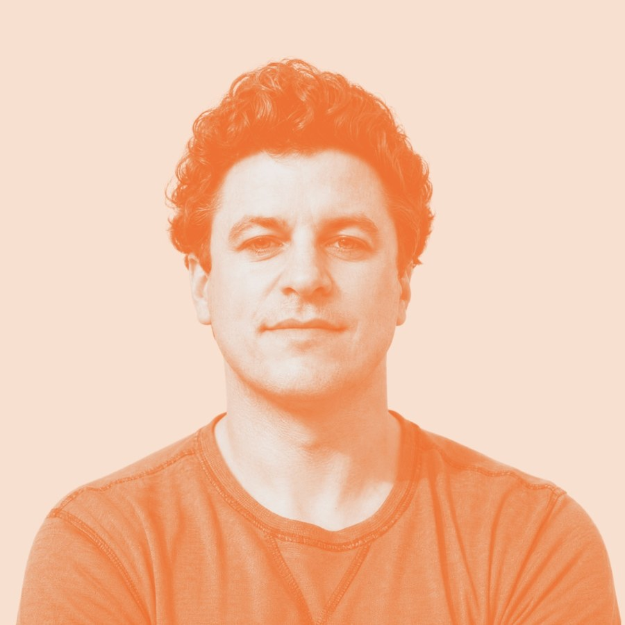

An interview with Noah Kerner, CEO and Chairman, Acorns
We all dream
Recorded July 2026 · Published August 2026
Noah Kerner has spent his whole life tuning his instinct. Before he was CEO of Acorns, a financial wellness app with millions of customers, he was a kid in New York City who got turntables in 1991, locked himself in his room until the early hours learning to scratch, and showed up to nightclubs with ten crates of records and no plan. He started his first company at 21 in the hip hop space, and spent four years interviewing 75 of culture’s most magnetic people for his book Chasing Cool.
In this interview, Noah talks about why nothing profound was ever built by simply following the data, what dogs smelling history can teach us about how adults break children’s creativity, and why he’s watched every Conor McGregor interview ever recorded.
How did getting into the DJing start?
I got into DJing early in hip hop in 1991. It was about turntablism and battling and scratching and beat juggling.
I was a public school kid, so I was surrounded by hip hop. The first cassette tape I can remember having was It Takes a Nation of Millions by Public Enemy. I thought DJing was the coolest art form, and I got turntables and locked myself in my room. I’ve always been somebody who wants to be great at what I do and put the time in to master a craft. Every night I would stay up till the early hours of the morning learning to scratch, watching battle DJs to take inspiration.
But I always had a feeling that the value is in originality and having your own thing. When I first started performing at nightclubs, I was really young. A lot of people had predefined sets. They knew the music they were going to play throughout the night, but I would come with ten crates of records and not know where I was going. I would follow the crowd.
You didn’t get nervous?
No, I was nervous, but I’m following my gut. I find this whole “follow the data” or “follow the research” thing to be so backwards. Nothing profound was built off of research in the classic sense. I have my antenna up about what it is that moves people, but you follow your heart, instinct, taste, imagination. It was night after night of doing these clubs where I started to become one with the audience.
When did you stop doing sets and start building companies?
I stopped around 26. I started my first company at 21, but it was in the hip hop space. All these things have followed a thread of what I’m passionate about, what moves me at the particular time. And now I’m moved only by the feeling of making things that are meaningful, helpful to people in a true sense, not in some corporate distorted sense.
How and why did this lead to building Acorns?
We built Acorns because the playing field is uneven, and everyone should have access to the real tools of wealth making — long term investing, diversification, dollar cost averaging, compounding, education, retirement planning etc.
What were the earlier companies?
In my 20s, it was hip hop. It was a product development and marketing agency focused on young adults. It was a music company. I wrote a book called Chasing Cool that was an exploration into what creates magnetism in culture and among consumers. We interviewed 75 people who had created something magnetic in every kind of field. What’s happening in corporate America is often chasing, but what leads to wonderful outcomes is the pursuit of an internal feeling and your own sense of taste. And above all things, you trust yourself.
Where did that self trust come from for you?
That was promoted in my household growing up, particularly by my mother. I can immediately transport myself back to this moment where she gave me a book of Albert Einstein quotes, bookmarked to, “Few are those who see with their own eyes and feel with their own hearts.”
But it’s a really hard thing because many people are told certain things as children. My wife and I have an art organization she runs called Give Kids Art, and the message is “Create Fearlessly.” The founding ethos is based on a Picasso quote, “Every child is born an artist. The problem is how to remain one as we grow up.”
Do you think someone is born creative vs not?
I think everybody is creative. We all dream, and dreams are magnificent. Every night you fall asleep and you become a producer, a director, a director of photography, a writer, an actor. You’re creating full feature length films in your mind every night. These are miracles. So when somebody says to me they’re not creative, I say, “Do you dream? You’re probably just not in touch with your creativity. So you need to pull that out, whatever is cutting you off from that inner child.” Back to the point — every child is born an artist.
Kids ask, “Why are things this way?” People around them respond with, “Just cuz. Stop asking so many questions.” Kids also break things. But kids break things because they’re experimenting. They’re trying to learn their way.
There’s a wonderful book about how animals experience the world, An Immense World. Dogs smell history. They experience smell as a chronological record of everything that happened in that spot. So when you pull your dog away from smelling, you’re breaking their natural instinct, their joy. I think of it as a metaphor for what happens to kids. “Don’t drop that. Don’t break that. Stop asking questions.”
I wonder how this changes when everyone has AI in their hands to ask “why” questions more freely.
Maybe it leads to more imagination, because you don’t have to be confronted by “Just cuz.”
What’s your sentiment around AI?
I would bring it back to what I said about creativity. Creativity, in many ways, is the ability to synthesize things into something your own. So if you have that foundation, you can access all of this amazing information and inspiration, but that’s just an input or an insight. You need to build something better. However, I’m not sure we should be treating AI as a replacement for our own instincts. It’s really hard to believe the human propensity for imagination would be replaced.
Are there inspiration sources you look at?
I’m drawn to people, and I’m fascinated by magnetism. I find myself going down many YouTube rabbit holes around people, just observing. I’m fascinated by Conor McGregor, the MMA fighter. Not because I like MMA (I don’t), but I’m fascinated by him as a personality. I’ve watched every interview he’s ever done. There is a confidence and a self belief that’s infectious. This man truly believes in himself. He’s also a great improviser — he’s as quick with his words as he is with his fists.
Theo Von is an interesting one too. I’m mostly fascinated by how much his audience adores him. Somehow he’s managed to cut through with vulnerability, and that is not easy to do.
When you wrote Chasing Cool and defined this concept of magnetism, does anything feel different now?
I wrote it 20 years ago, 2007. I would spend a couple hours with Michael Lang, who started Woodstock, or Ahmet Ertegun, who founded Atlantic Records, or Richard Meier, the architect, or Tom Ford. People who were perceived as “cool” by a large following. And the question is why.
I co-wrote the book with the person who ran Barneys. I spent four years working on this with him, and I learned so much from him about taste, simplicity, merchandising. Everything is merchandising to some extent. You’re romancing somebody through a journey to a destination, and it’s no different than moving someone through a store.
But in the end, it all has to come from inside you. That is the answer to all the questions. No matter how many people you talk to and listen to, what matters is what comes from inside you, what you really feel and believe, and whether you can bring that to life in a way that connects with other people who probably feel somehow similar to how you feel. Ultimately you’re building for yourself. The most successful people build for themselves… If you don’t love it, what are you doing?